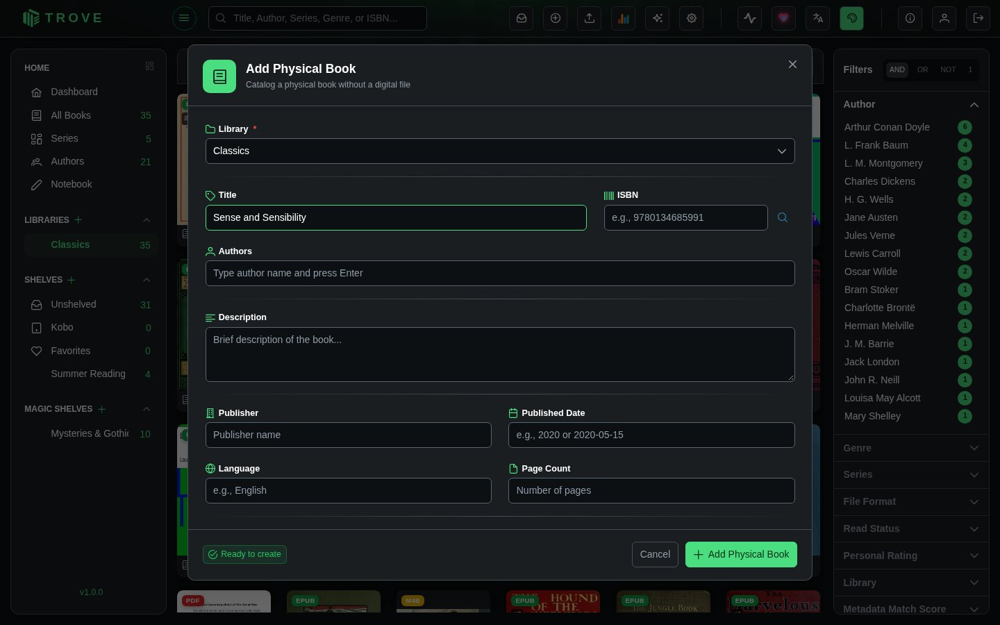

Physical books
Physical books let you catalog books you own in print, without needing a digital file. This is useful for tracking your full collection in one place, even if some of your books only exist on a shelf at home.
Physical books live alongside your digital books in any library. They show up in search, can be assigned to shelves and Magic Shelves, and support full metadata editing.
Key Differences from Digital Books
| Digital Books | Physical Books | |
|---|---|---|
| File required | Yes (EPUB, PDF, CBZ, etc.) | No |
| Added via | Library scan or Bookdrop | Manual form |
| Reader | Built-in reader | Not applicable |
| Cover generation | Extracted from file | Fetched via metadata or uploaded manually |
| Metadata fetch | Automatic or manual | Manual entry, then fetchable via metadata providers |
| Badge | Format badge (EPUB, PDF, etc.) | Purple PHY badge |
| Shelves & Magic Shelves | Supported | Supported |
Adding a Physical Book
Step 1: Open the Library Menu
Open the library, click the ⋮ beside its name, and choose Add Physical Book.

Step 2: Fill in the Form
The Add Physical Book dialog lets you enter metadata for your book. The only hard requirement is that you provide a Title or an ISBN (or both).

Fields:
| Field | Required | Notes |
|---|---|---|
| Library | Yes | Pre-selected if opened from a specific library |
| Title | Title or ISBN | The book's title |
| ISBN | Title or ISBN | ISBN-10 or ISBN-13 |
| Authors | No | Type a name and press Enter. Autocompletes from existing authors in your collection. |
| Description | No | Brief description or summary |
| Publisher | No | Publisher name |
| Published Date | No | Accepts 2020 or 2020-05-15 format |
| Language | No | e.g., English |
| Page Count | No | Number of pages |
| Categories/Genres | No | Type a category and press Enter. Autocompletes from existing categories. |
Click Add Physical Book to save.
Step 3: View Your Book
Once created, the physical book appears in the library alongside your digital books. It shows a purple PHY badge on its cover so you can tell it apart.
You can edit its metadata, assign it to shelves, upload a cover image, or fetch metadata from online providers just like any other book.
Adding many at once
To catalogue a shelf of paper books quickly, choose Import ISBNs from File from the library's menu. Upload a .txt, .csv or .tsv file (up to 1 MB), or paste ISBNs one per line or separated by commas, and click Parse. Trove checks each ISBN, drops duplicates and ones already in the library, and shows what it will import. Start Import then creates a physical book for each, looking up its details from your metadata sources as it goes. Up to 500 ISBNs are imported at a time.
When you get the ebook
If a file whose name matches a physical book's title exactly turns up in the same library (for example Emma.epub for a physical book titled "Emma"), Trove attaches the file to that book instead of creating a second one, and the book becomes readable.
Finding them with a magic shelf
You can create a Magic Shelf that automatically collects all your physical books using the isPhysical rule field.
Example rule:
{
"field": "isPhysical",
"operator": "equals",
"value": "true"
}This makes it easy to see your entire physical collection at a glance, or combine it with other rules (e.g., all physical books by a specific author).
See Magic shelves for more on creating rule-based shelves.
Books with no file
A book can also lose its file without being a physical book: the file was deleted from the book's page, removed or moved outside Trove, or it belonged to a library folder that was taken away. Such a book keeps its details and reading history, but shows a grey NO FILE badge instead of a format, and its Files tab says so.
To tidy them up, open All Books, choose No file under File Format in the filter sidebar, then either:
- select them and delete them, if you don't want them any more, or
- for ones you own in print, choose Mark as Physical from the book's menu so they count as physical books, or
- upload the file again from the book's page.
If the file is still somewhere in a library's folders, Re-scan Library adds it again, then delete any record left without a file.
Notes
- Physical books do not have a built-in reader since there is no file to open.
- Cover regeneration is skipped for physical books. To add or change a cover, use the metadata editor to upload one manually or fetch it from a metadata provider.
- Physical books count toward your library totals and appear in search results, filters, and statistics.